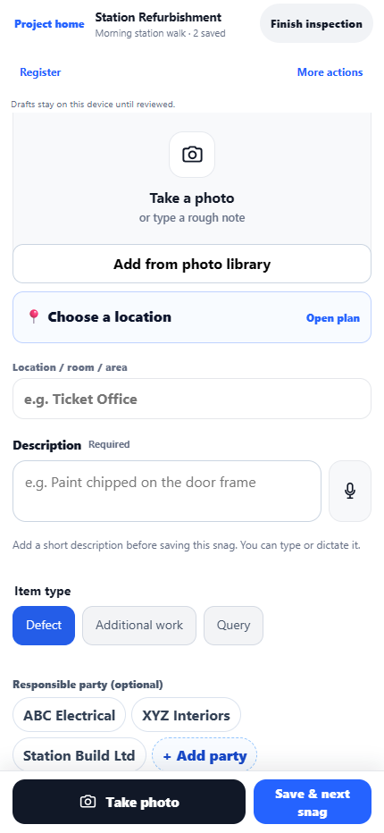
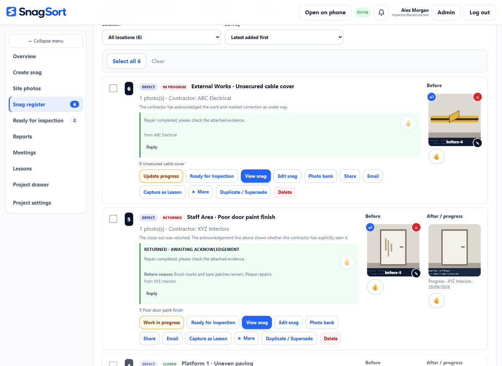
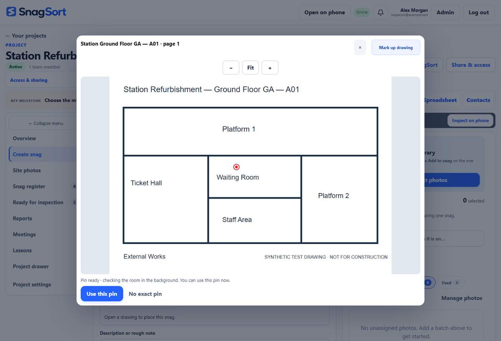

Capability case study
Digital Snagging
From site observation to verified closeout: a structured, photo-led snagging workflow designed to keep contractor responses and acceptance decisions separate.
About this case study. This is a capability case study and product demonstration, not a client project. It describes a common industry problem and how GMBF approaches it. The screens show sample data from a fictional demonstration project, and the outcomes described are what the workflow is designed to support, not measured results.
The problem
Snag lists that lose the thread.
On many construction projects, defects are still recorded in spreadsheets, notebooks and photographs scattered across phones and email. Each format works on its own; the trouble starts when they have to be brought together.
Photographs become separated from the items they describe. Locations are written in shorthand that only the inspector understands. And when a contractor reports an item as “done”, it is often unclear whether anyone has checked it, which makes the status at handover hard to rely on.
Independent guidance for new homes stresses the basics: keep a detailed log of each snag, with the date it was reported and a description, so progress can be tracked.1
The approach
One record per defect, start to finish.
The workflow is designed so that each defect is captured once, on site, with its location, description and photographs, then carried through assignment, response, inspection and an explicit acceptance decision.
How it works in the demonstration
Capture, locate, close.
Three screens from the product demonstration, using sample data, show the intended workflow.



What it is designed to change
Clearer status, defensible handover.
These are the changes the workflow is designed to support. They are qualitative and depend on how the process is run; they are not measured client results.
Clear status
The difference between “contractor says complete” and “client has accepted” is visible to everyone.
Evidence attached
Photographs and descriptions stay with the item they describe, from capture to closeout.
Owned review
Items ready for inspection form a queue with a named reviewer.
Handover record
Each closed item shows who accepted it, when and on what evidence.
Read more: Verified closeout, why “done” should start the review
Sources
Independent sources
Government, standards bodies and industry bodies. GMBF has no connection with these publishers.
- New Homes Quality Board, A Homeowner Guide to Snagging, V2, May 2026. https://www.nhqb.org.uk/wp-content/uploads/2026/06/A-Homeowner-Guide-to-Snagging-V2-May-2026.pdf
SnagSort publications (our own product content)
SnagSort is a GMBF Ventures product. These guides are our own practical content, not independent evidence, and are cited for the working method they describe.
- SnagSort, “Done” is the start of the review (practical guide). https://www.snagsort.com/blog/from-contractor-response-to-verified-closeout
- SnagSort, Take photos that explain the snag (practical guide). https://www.snagsort.com/blog/photographs-that-support-snagging
- SnagSort, How to do a snagging inspection (and turn photos into a register someone can act on). https://www.snagsort.com/blog/how-to-do-a-snagging-inspection